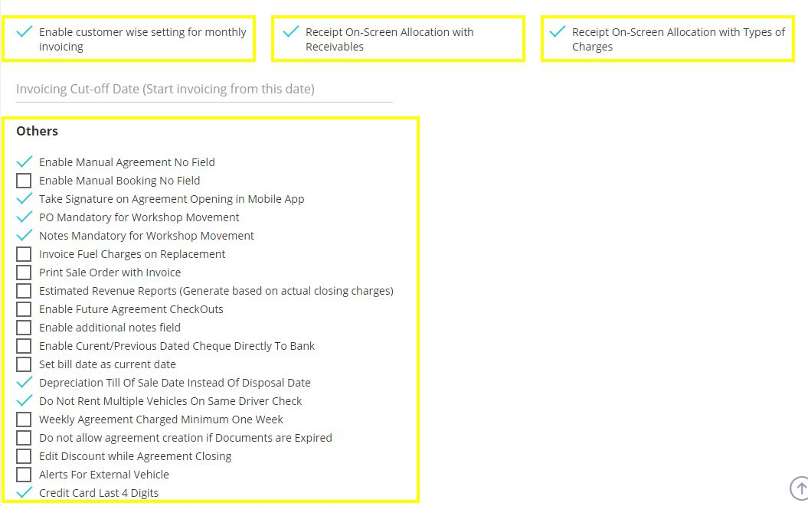

Rental Extra Settings :
Enable customer wise settings for monthly invoicing : If you select this option than there will be an option for every individual customer that at the time of creating the agreement you will have option to put the invoicing rule that you want to charge it with which rule.
Receipt On-Screen Allocation with Receivables : If we select this option it will restrict the user to allocate the reciveable amount to related invoice.
Receipt On-Screen Allocation with Types of Charges: If we select this option here you will have to allocate each charge type to the invoice.

Others:
a. If we check this box then you have to manually enter the agreement no and if you uncheck then system will automatically generate agreement no.
b. If we check this box then you have to manually enter the booking no and if you uncheck then system will automatically generate booking no.
c. While opening new agreement from moble app if you want to take signatures on agreement then check it otherwise the electronic signatures will be taken only on checking out and checking in.
d. If you select this then you have to enter the purchase order details and without entering the number you will not be able to proceed. (Kindly uncheck this to run the system smoothly)
e. While creating a workshop movement if we check this then system will not let us go further and make a movement untill we enter some details or notes about it.
f. While replacing a vehicle the diffrence of fuel level will be invoiced if we select this otherwise it will be charged at the time of agreement closing.
g. If we select this then whenever we are creating a invoice a sale order will also be generated.
h. If we check this option then system will show us estimated reports based on the actual closing charges not including extra things.
i. This option is related to fufture checkouts that the car is to be checked out after 3 days but the person will not be available on that day so he checkout the vehicle today.
j. If we select this then we have another line to add notes to the agreement.
k. If we select this option then it will put all the new and previous cheques directly to bank to clear the accounts.
l. If we select this option then whenever the customer pays the bill agreement shows the same date.
m. If we select this option then system will not allow us to rent diffrent vehicles on same driver.
n. If we select this option then agreements opened on weekly basis will be charged weekly not on daily or monthly.
o If we select this then system will not allow us to make a agreement if the documents or driving license or passport is expired of the customer.
p If we select this option then at the time of closing the agreement we have option of providing the discount otherwise that option is only available while opening the agreement.
q This option is related to Credit Card if we select this then without entering the last 4 digits system will not allow you to move further.